我們製作了以「白馬的家」為中心的建議行程，大家可以參考我們的資料，來一趟線西采風之旅
時間 |
地點 |
活動 |
10:00 |
白馬的家 |
聽取簡報介紹後，分批製作鹹蛋、釀酒和體驗騎馬(要預約) |
12:00 |
線西海產街用餐 |
休息一下，累積體力繼續下午的行程 |
13:00 |
蛤蜊兵營 |
看看老舊的歷史建築，還有當地師父會教你捏麵人 |
14:00 |
永安製鼓坊 |
聽取老闆介紹傳統製鼓流程，體驗打鼓樂趣(要預約) |
15:00 |
彰濱肉粽角 |
賞鳥、蚵田風光、沙灘景緻、海釣、沙灘騎馬(向白馬的家預約) |
16:30 |
塭仔港 |
來看這漁港風光，買現撈漁貨、吃新鮮海產，滿載而歸回家 |
路線地圖
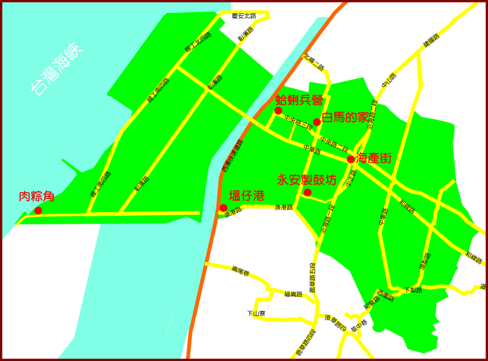
| 白馬的家 |
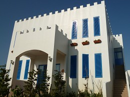 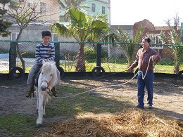 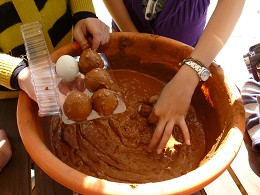 |
| 這裡就是我們專題的主角，一早來，先到這裡來DIY鹹蛋、釀酒、騎騎小馬，感受一下老闆的熱情。記得要先來電預約哦！ |
| 地址：線西村中央路2段896巷115號 電話：04-7580930 |
| 線西海產街 |
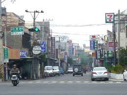 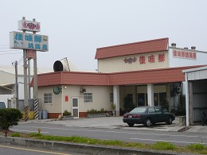 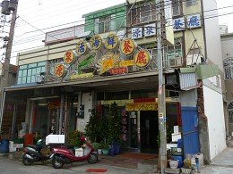 |
| 線西台17線一帶的中正路、沿海路，聚集了很多海產店，海產大部份是從當地塭仔港來的新鮮現撈海鮮，老闆還會教您一 些魚產的常識，很熱情喔！等你來這裡飽餐一頓。 |
| 地址：台17線中正路和沿海路一帶 |
| 蛤蜊兵營 |
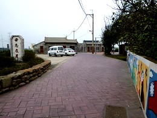 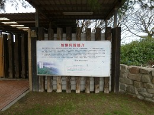 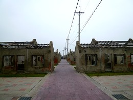 |
| 這裡是以前駐紮於線西海防部隊所留下的建築物，共有11棟均有五十年的歷史遺址，入口處是以貝殼構築之「毋忘再莒」精神堡壘，還有充滿戰地色彩的碉堡，鄉公所將此規劃為藝術村與海邊生態遊憩區，除了特殊的房舍可供藝術家進駐外，附近的溝渠內還看得到魚蝦蟹，完全沒有污染，適合闔家造訪遊賞。 |
| 地址：寓埔村中華路818巷71-89號 |
| 永安製鼓坊 |
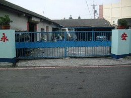 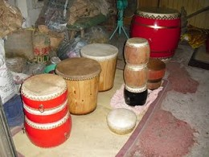 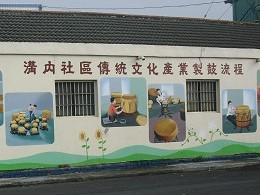 |
| 歷經三代的傳承，已有六十多年的歷史，他們堅持純手工製作，保留傳統的製鼓技術，只要有觀光客來訪，老闆都會熱情介紹，並詳細說明製鼓流程。記得要先來電預約哦！ |
| 地址：溝內村溝內路48號 電話：04-7580841 |
| 肉粽角 |
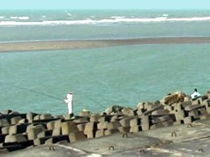 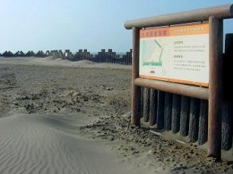 |
| 由消波塊構築而成的海岸，俗稱肉粽角，是野鳥天堂 ，設有觀鳥平台供遊客賞鳥。堤岸則是最佳的海釣地點，退潮後可以挖赤嘴、蝦猴，也可以看到蛤農採蛤的景象。近來裝設了許多風力發電機組，不但符合全球能源利用趨勢，也適合實施能源利用教育。（若想從事水上活動，要先查詢漲潮和退潮的時間） |
| 地址：彰濱工業區線西區內靠西南角落 |
| 塭仔港 |
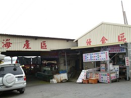 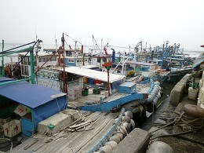 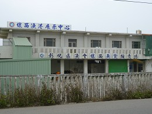 |
| 來到這裡不但可以聽海濤，到觀景台看看碼頭風光，最重要的就是嚐鮮了。在漁港碼頭，每到下午三、四點左右，出海捕魚的漁船陸續歸來，遊客就可以買到新鮮的魚貨回家料理，也可交由附近餐廳立刻烹煮，絕對是美味可口，讓人口齒留香。 |
| 地址：位於塭仔村，在台61線，西濱快速道路橋下進入 |
▲TOP
|